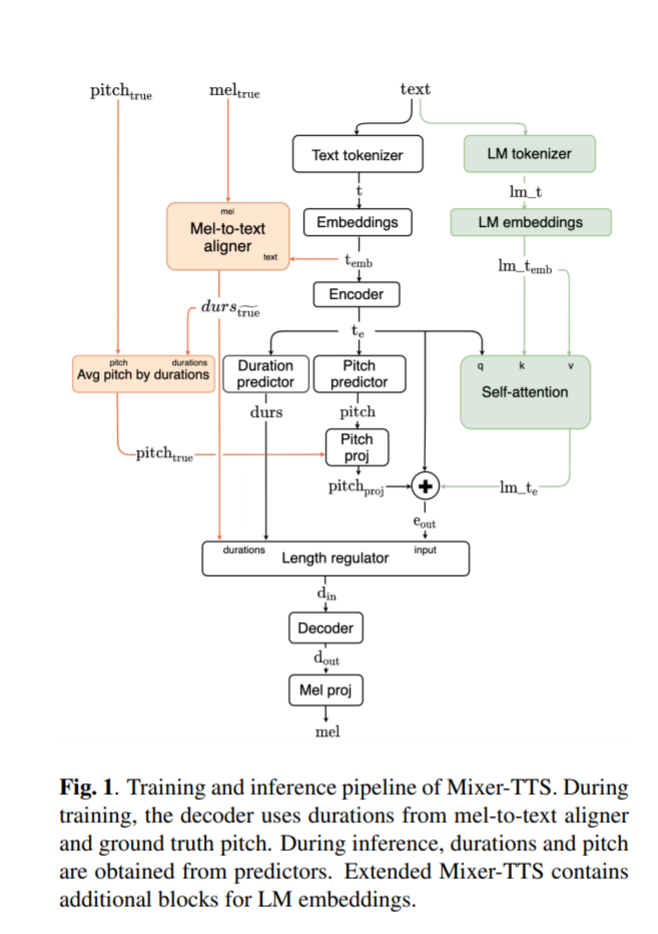
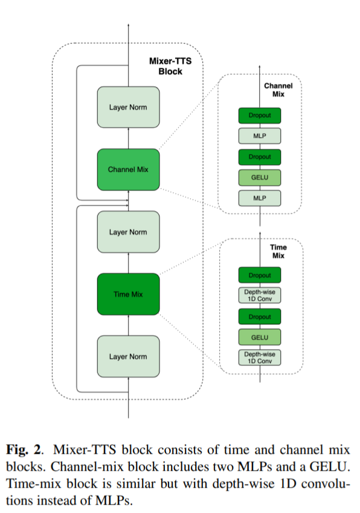
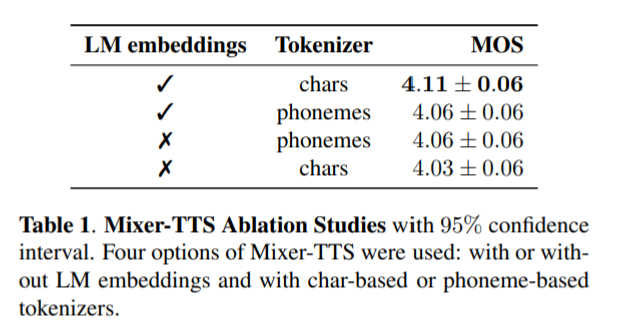
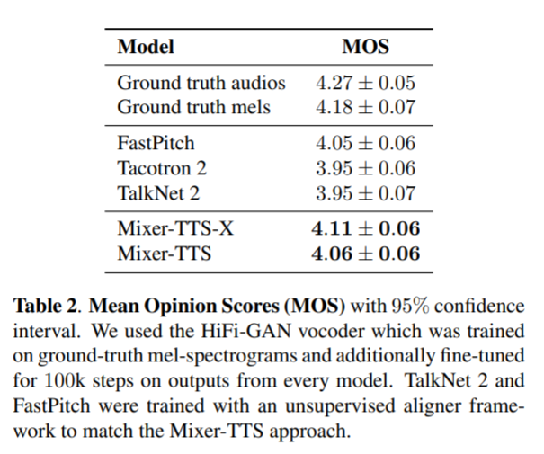
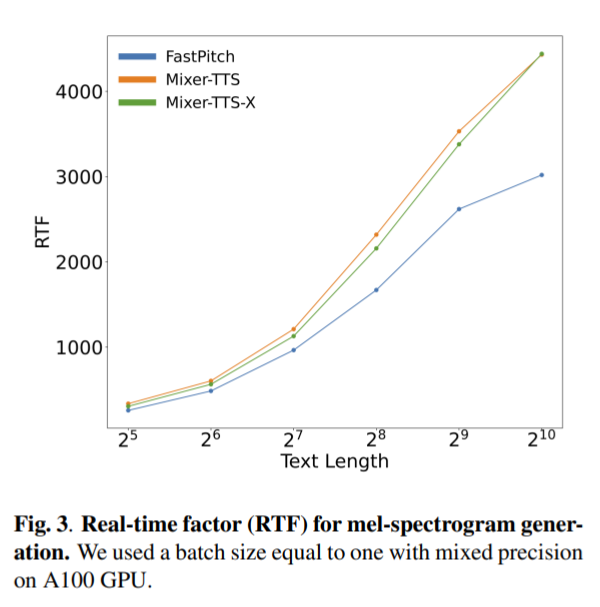

Mixer-TTS
Mixer-TTS: non-autoregressive, fast and compact text-to-speech model conditioned on language model embeddings
by Oktai Tatanov, Stanislav Beliaev, Boris Ginsburg (NVIDIA, Santa Clara).
Available on arXiv - Oct 2021. Code not available yet. This journal was last updated on 11/8/2021.
Abstract
This paper describes Mixer-TTS, a non-autoregressive model for mel-spectrogram generation. The idea here is that Mixer-TTS achieves similar quality (measured as Mean Opinion Score (MOS)) as state of the art TTS models today, like FastPitch, using almost half the parameters, and therefore better inference performance. Basic Mixer-TTS contains pitch and duration predictors as well.
Notes
Intuition behind Mixer-TTS:
- Latest improvements in training and inference speed has been mostly related to switching from sequential, autoregressive models (like Tacotron - 2017, Wavenet - 2017 and Deep Voice 3 - 2017) to parallel, non-autoregressive models (like FastSpeech - 2019, FastSpeech 2 - 2020, FastPitch - 2020 and Talknet - 2020).
- Non-autoregressive models generate speech two order of magnitude faster than auto-regressive models with similar quality.
- unknown meaning of autoregressive vs non-autoregressive
- Example, FastPitch generates mel-spectrograms 60x faster than Tacotron 2.
- The robustness of TTS models has been improved by using an explicit duration predictor (like in Deep Voice - 2017,
Deep Voice 2- 2017, FastSpeech - 2019, FastSpeech 2 - 2020, FastPitch - 2020 and Talknet - 2020)- Traditionally, models with duration predictors have been trained in a supervised manner with external ground truth alignments.
- For example, TalkNet used the alignment from auxiliary ASR models, while FastSpeech and FastPitch used alignments from a teacher TTS model.
- Glow-TTS - 2020 proposed a flow based algorithm for unsupervised alignment training, further improved in RAD-TTS - 2021 and modified for non-autoregressive models here -
One TTS Alignment To Rule Them All- 2021 - and that is used in Mixer-TTS model.
- The quality of non-autoregressive models improved with:
- FastPitch - 2020 adding a pitch predictor for fundamental frequency (F0).
- Further improvement suggested by
Hayashi et al- 2019 was to augment TTS model with input representation from pre-trained BERT - 2018 language model.- Intuition here is that text embeddings contain information about the importance of each word, which helped to improve speech prosody and pronunciation.
- The usage of semantic context for TTS was extended in
Xu et al- 2021
- The model backbone is based on
MLP-Mixer- 2021 architecture from computer vision adapted for speech.- MLP-Mixer makes the model significantly smaller and faster than Transformer-based TTS models (like FastSpeech 2 - 2020, FastPitch - 2020) not sure why, yet
- Using token embeddings is significantly less expensive inferring BERT outputs as shown in
Hayashi et al- 2019. Unclear intuition here.- They notably improve speech quality with a very modest increase in the model size and inference speed.
There are two versions of Mixer-TTS presented in the paper:
basic- uses (unclear about the implementation here - perhaps similar to Fastpitch) some embeddings. Achieves a MOS of 4.05. About 19.2 M parameters.extended- usestoken embeddingsfrom pre-trained language model (ALBERT from HuggingFace). Achieves a MOS of 4.11. About 24M parameters.
Samples published here: mixer-tts.github.io
Architecture
Here is what the model architecture looks like:

We encode the text and align it by using audio features in a separate module to get “ground truth” durations. Then we calculate character or phoneme-level pitch values and feed them all into the length regulator module to expand each character or phoneme feature along with their corresponding durations. Next, the decoder generates mel-spectrogram from the encoded representations.
Mixer-TTS is structurally very similar to FastPitch with two major changes:
- Replace all feed-forward Transformer-based blocks in the encoder and decoder with new Mixer-TTS blocks.
- Use an unsupervised speech-to-text alignment framework to train duration predictor. However, duration and pitch predictor architectures are the same as FastPitch.
- The extended Mixer-TTS additionally includes conditioning on embeddings from pretrained LM.
Loss function - aligner loss and mean-squared errors between ground truth and predicted values for mel-spectrogram, duration and pitch:
L = Laligner + Lmel + 0.1 * Ldurs + 0.1 * Lpitch
Mixer-TTS block

MLP-Mixer performs 2 key actions over input:
mixingthe per-location features andmixingspatial information
Both operations are performed by stack of two MLPs layers:
- First MLP layer increases the number of channels by an
expansion factor - Second MLP layer reduces the number to its original value
But such approach is only possible for when input size for a layer is fixed by every dimension. Why?
To use this architecture for TTS (input’s dimensions have dynamic size), we use time mixing, replacing MLPs with depth-wise 1D convolutions and borrowed the original layer for channel “mixing”.
- During mini-batch training and inference, when sequences in a batch are padded to match the longest sequence, we use sequence masking after MLP and depth-wise 1D convolution layers.
Other model details:
- The encoder is composed of 6 stacked Mixer-TTS blocks with convolution kernel in time-mix growing linearly from 11 to 21 with step 2. how were these numbers chosen? Or any of these below.
- The decoder is composed of 9 stacked Mixer-TTS blocks with kernel sizes growing from 15 to 31 in the same manner.
- Feature dimension is constant 384 for all blocks used, channel-mix expansion factor is 4 and there is no expansion factor in time mix.
- Dropout of 0.15 in each block.
Speech-to-text alignment framework
We train the speech-to-text alignments jointly with the decoder by using adaptation of unsupervised alignment algorithm which was proposed in the implementation of Fastpitch.
- This aligner encodes text and mel-spectrogram using 1-D convolutions and projects them to a space with same dimensionality.
- The “soft” alignment is computed using a pair-wise L2 distance of the encoded text and mel representations, then Connectionist Temporal Classification (CTC) loss is used to learn these alignments.
- To obtain
monotonic binarized alignments(i.e."ground truth"durations), theViterbi Algorithmis used to find the most likely monotonic path.
Extended Mixer-TTS
- For the extended model - ALBERT - 2019 (from HuggingFace - 2019) pretrained on large corpus of English text is used.
- We kept the LM tokenization method and utilized the frozen embeddings for input tokens.
- The lengths of original and tokenized text from external LM are different because they are produced by different tokenizers. To align two sequences, we use a single head self-attention block applied to LM embeddings lmemb and encoder output te, which mixed their features while preserving the lengths of
basictext embeddings. - Text features for self-attention aligning are extracted with convolutional layers preceded by separate positional embedding layers.
Results
We evaluate the quality of proposed models combined with a HiFi-GAN vocoder on LJSpeech.
Dataset used: LJSpeech dataset ~ 2.6 GB
- This is a public domain speech dataset consisting of 13,100 short audio clips of a single speaker reading passages from 7 non-fiction books. A transcription is provided for each clip. Clips vary in length from 1 to 10 seconds and have a total length of approximately 24 hours.
- MOS of 4.27 source unknown
- This dataset was split into 3 sets:
- 12, 500 samples for training
- 100 samples for training
- 500 samples for testing
- The text was lower-cased and all punctuation was left intact.
Experimented with two tokenization approaches:
- character-based
- phoneme-based
- For grapheme-to-phoneme conversion we used ARPABET representation in the CMUdict vocabulary and left ambiguous words and heteronyms in character representation.
Training details
- We converted ground truth 22050Hz sampling rate audios to mel-spectrograms using a Short-Time Fourier Transform (STFT) with 50ms Hann window and 12.5 ms frame hop.
- Ground truth pitch was extracted using the librosa library with values-aligned along mel-spectrogram frames.
- The model was trained for 1000 epochs using the LAMB optimizer with β1 = 0.9, β2 = 0.98, ε = 10-8, a weight decay of 10-6 and gradient clipping of 1000.0.
- A Noam annealing learning rate policy was used with a learning rate of 0.1 and a 1000 steps warmup.
- We used a total batch of 128 for 4 GPUs with gradients accumulation of 2. The training takes around 12 hours on 4xV100 GPUs in mixed precision mode.
Speech Quality Evaluation
Conducted two mean opinion score (MOS) studies for gneerating speech quality comparison using Amazon Mechanical Turk.
- For evaluation - we selected MTurk workers with top performance (>= 95% HITS approval, >= 5000 HITS total) - from US only with a minimum high school degree.
- Tested 50 audio samples per model with 15 people per sample.
- The scores ranged from 1.0 to 5.0 with a step of 0.5.
Mixer-TTS with different tokenization approaches in combination with LM embeddings

Observations:
- Phonetic input representation slightly outperforms characters for the basic model.
- But for the extended model, the combination of character-based tokenization with LM embeddings performs better.
Mixer-TTS vs popular TTS models
Fastpitch and TalkNet 2 were trained with the same aligner mechanism as used in Mixer-TTS (as opposed to the usual external set of durations) - to match the approach presented in Mixer-TTS

Observations:
- The basic version of Mixer-TTS with phonemes achieves a comparable MOS to Fastpitch.
- The extended version (Mixer-TTS-X) exceeds the quality of all the examined models.
Inference Performance
The measurement was done with a variable-length text generator based on snippets from the LJSpeech test set and a batch size of 1. The paper contains exact environment/library version details. We measured the wall-time of mel-spectrogram generation starting from raw text processing step and averaged results from 10 consecutive runs with a warmup for cuDNN to adjust algorithms to input sizes.

Observations:
- Mixer-TTS is notably faster than Fastpitch and it scales better with increasing input length.
- The best version of our model has only 24 M parameters while FastPitch has 45 M parameters.
Discussion
And finally, this was the first paper I reviewed in the text-to-speech domain, ended up with more questions than answers. Looking forward to learning more as I go along this journey. Feel free to drop interesting papers in this domain in the comments section!
Other tags: Conversational-AI TTS Model-Architecture